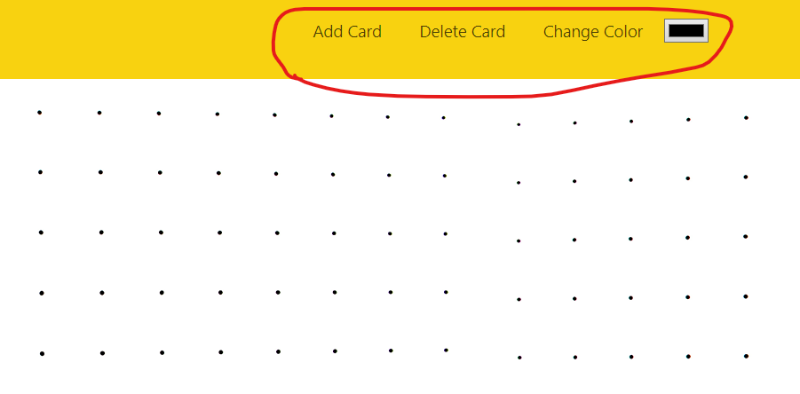

Guide
Guide
 Эти три кнопки отвечают за создание, удаление и изменение цвета записей.
Add Card - добавляет новую запись которой можно изменить запись.
Delete Card - после нажатия по любой карточке удаляет ее.
Change Color - меняет цвет записи на указанный по нажатию.
Вернутся на главную страницу
Ссылка на github этого проекта